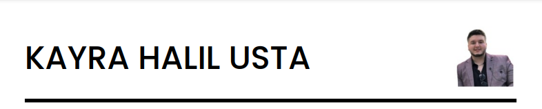
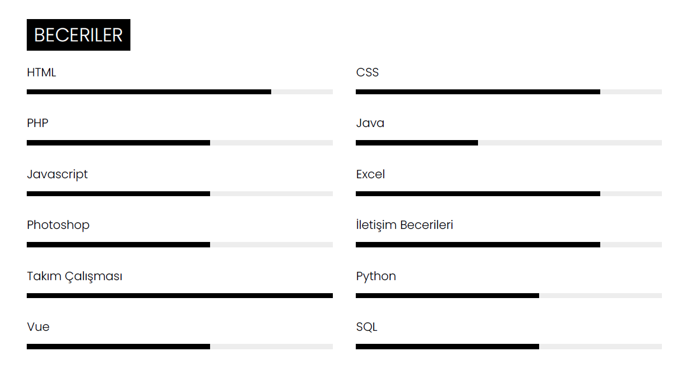

Eğitimler
- İşletme (Açıköğretim, Devam ediyor)
İstanbul Üniversitesi, İstanbul
- Bilgisayar Programcılığı (Eyl 2022 - Tem 2024)
Kırklareli Üniversitesi, Kırklareli
- Web Tasarımı ve Kodlama (Açıköğretim, Devam ediyor)
Anadolu Üniversitesi, Eskişehir
- Oğuz Canpolat Anadolu Lisesi (Eyl 2018 - Haz 2021)
Lise, İstanbul/Eyüp
Beceriler

Sertifikalar
- BTK Akademi Microsoft PowerPoint
- BTK Akademi Microsoft Word
- BTK Akademi Ağ Temelleri
- BTK Akademi HTML5 ile Web Geliştirme
- BTK Akademi CSS Temelleri
- BTK Akademi Temel Ağ Teknolojileri
Gönüllülük Projeleri
- 4006-Tübitak Bilim Fuarları Destekleme Programı 2021
Oğuz Canpolat Anadolu Lisesi, İstanbul/Eyüp